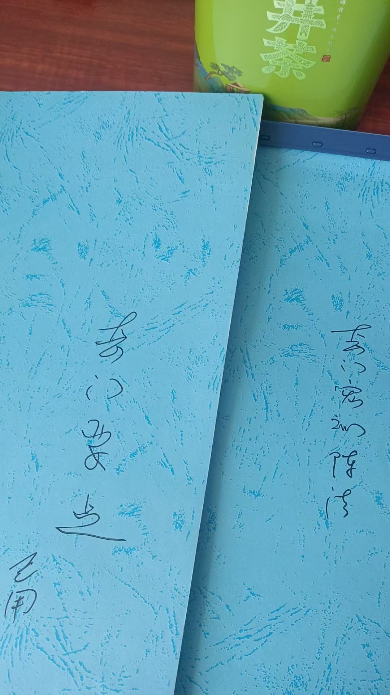

20260523第二部奇门法术，讲课要点
奇门遁甲符咒术法 原始对话记录
第二部奇门法术，讲课要点
[强]
谁爱好，免费送
不过，必须诚心学习
绝不能搞的满大街都是
@紫鸢真人 我需要
好好好
@紫鸢真人 我需要
好好好
[呲牙][呲牙][呲牙]
[鼓掌][鼓掌][鼓掌]需要需要
那我就拍下来，自己打印
谢谢老师[合十][合十][合十]
有时间我讲解
以下为编者整理的主题文章
编者整理 · 主题文章
奇门法术（第二部）讲课要点：从占卜到布阵的进阶
一句话结论：原记录提到"第二部奇门法术"的讲课要点，属进阶内容——奇门从"占卜断事"进一步走到"择时择方、布局调理"。本页整理这份讲义的定位与学习路径，讲清第一部与第二部的大致分工。
一、本页是什么
原记录是一段分享"第二部奇门法术讲课要点"的对话：有人愿意免费给勤学者，但强调"必须诚心学习""绝不能搞的满大街都是"。文字不多，这里补一篇导读，讲清"第二部"处在这套学问的什么位置。
二、奇门的两部：占与用
| 部别 | 侧重 | 内容 |
|---|---|---|
| 第一部 | 占卜（看） | 认盘、排盘、解盘、断事——把盘看懂 |
| 第二部 | 法术（用） | 择时、择方、布阵、运筹——把盘用起来 |
第一部的终点是"断得准"，第二部的起点也是"断得准"——不会断，就谈不上"用"。
三、第二部大致讲什么
从"讲课要点"这个定位、结合本集群其他记录推断，第二部主要涉及：
- 择时择方：从盘里选吉时吉方办事；
- 法术布阵：在空间上做布局调理（见《奇门法术布阵入门》）；
- 分类应用：财、事业、学业、风水等不同专题的"用"法；
- 配合使用：与八字、风水互相配合。
注：原页文字有限，以上是依据关联记录整理的学习框架，非对讲义细节的逐条复述。
四、学习路径建议
- 零基础：先学第一部（认盘→排盘→看四害→解盘→占事）；
- 能断事之后：再学第二部（择时择方→布阵）；
- 始终配合：大量看盘、复盘，才是根本。
五、常见问题
问："不能满大街都是"是什么意思？ 记录者强调传承的谨慎与诚心——属传统师承观念，不代表内容"有秘不可传"。本页只作文化了解。
问：第二部比第一部难吗？ 一般认为更难，因为从"看"到"用"要落地，对盘象的把握要求更高。
问：学了就能"布阵改运"吗？ 本页属传统术数文化的学习记录。所谓"布阵改运"是术数里的说法，不构成任何功效承诺，请理性看待。
六、提醒
- 先会断，再谈会用；
- 第二部＝择时择方 + 布局调理 + 分类应用；
- 本页仅供传统文化研究参考，请理性看待。
说明与免责：本站为民间修炼、民俗文化与传统文化资料的整理与记录，内容源自传承者口传与个人修习体会，仅供文化交流与研究参考，不构成医疗、健康、投资或任何功效承诺。所述内容属传统术数范畴，请理性看待；如身体不适，请及时就医。请遵守法律法规与公序良俗。